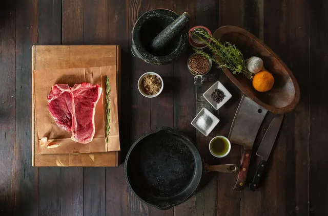
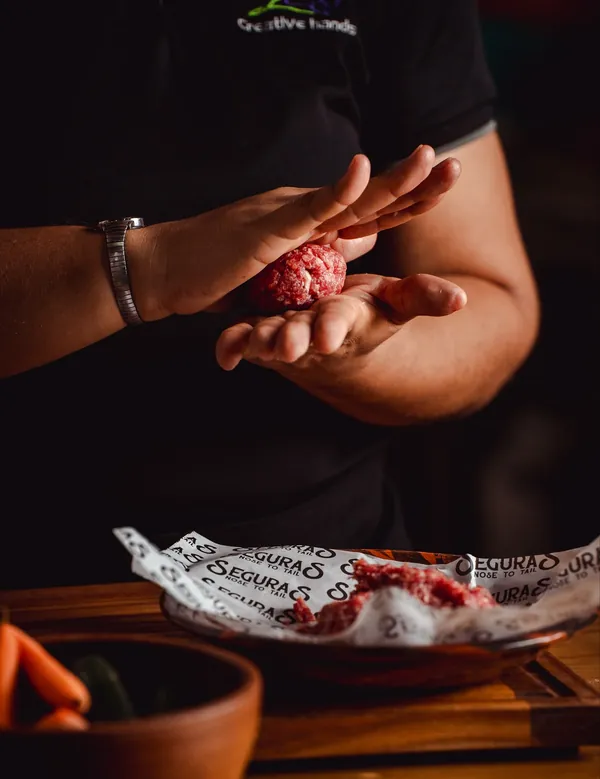
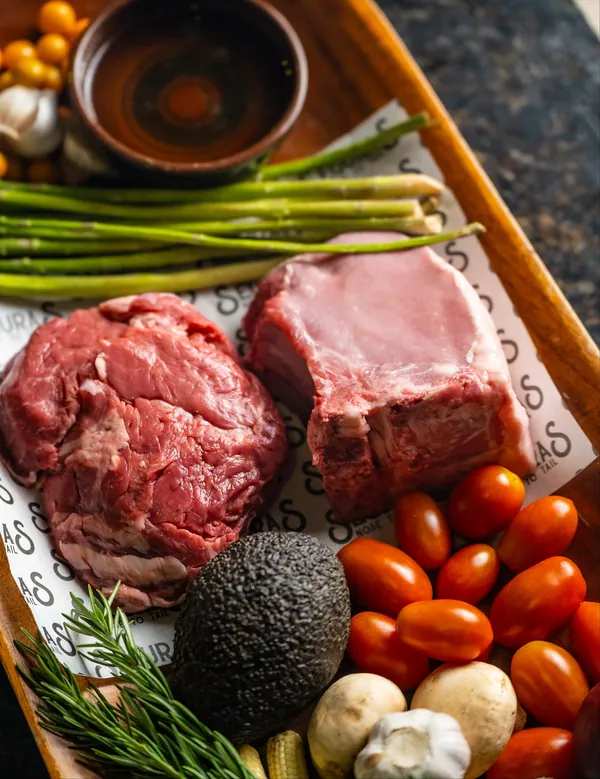

Grass-Fed Beef
Ribeye, picanha, ground beef, and roasts from cattle raised on Costa Rican pasture.
- Ribeye
- Picanha
- Ground
- Roasts
A family butcher shop in Uvita, Costa Rica. We cut 100% grass-fed beef, pasture-raised pork and chicken, and bottle raw cow and goat milk from farms we visit and know by name.
Nose to Tail. Whole-Animal Butchery.
About the Shop
Seguras Meat Market is a family-run carnicería in Uvita, Puntarenas. We sell beef cut from cattle raised on Costa Rican pasture their entire lives. No grain finishing. No feedlots. No surprise ingredients on the label.
Families drive in from Dominical, Ojochal, Bahía, and across the Costa Ballena for our grass-fed ribeye, picanha, raw cow milk, and artisan butter. If you cook real food at home, you'll feel right at home here.
We work nose to tail. Every animal we cut is used in full.

Cattle raised on Costa Rican pasture their whole lives. No grain finishing.
We source from farms we visit. Real names, real fields, real care.
An independent Costa Rican shop run by people who know butchery from packaging.
Raw milk, artisan butter, bone broth, tallow, and ghee. The basics, done right.
In the Case
A working butcher case in Uvita stocked with the cuts and staples we feed our own families. Selection rotates with the farm. Message us on Facebook, Instagram, or WhatsApp for today's availability.

Ribeye, picanha, ground beef, and roasts from cattle raised on Costa Rican pasture.
Pasture-raised pork and chicken from local farms, butchered in our Uvita shop.
Raw cow milk, raw goat milk, heavy cream, half and half, plus Greek and flavored raw yogurts.
Herb cheddar, cotija, mozzarella, plus artisan butter, ghee, lard, tallow, and bone broth.
Free Weekly Delivery
We do one delivery run a week across Uvita, Dominical, Ojochal, and the Costa Ballena. It is free for our customers.
How it works
Service area
Visit the Shop
Drop in and pick something for tonight. We'll walk you through cuts, cooking, and what's freshest in the case.
New cuts, market updates, and behind-the-counter looks.
What people say
A small shop, big reputation. Read what customers are saying on Google, then come taste the difference yourself.
A premium destination for ethically-sourced animal products. Cool, modern vibe. The neon cow sign reading "Meat the Future" creates a cool, modern energy despite the traditional butchery focus.
[Owner: paste a real Google review here, then update the name and remove this note.]
[Owner: paste a real Google review here, then update the name and remove this note.]
[Owner: paste a real Google review here, then update the name and remove this note.]
[Owner: paste a real Google review here, then update the name and remove this note.]
Common Questions
Our shop is on Camino a Playa Colonia in Uvita, Puntarenas, Costa Rica. We serve customers across Costa Ballena including Dominical, Ojochal, and Bahia Ballena.
Our cattle are raised on Costa Rican pasture their whole lives. No grain finishing, no feedlots, no industrial shortcuts. The meat tastes the way beef is supposed to taste.
Yes. We deliver free of charge every Tuesday across the Uvita and Costa Ballena area. Place your order by Friday 11:59pm to make the next delivery run.
Yes. We stock raw cow milk and raw goat milk from local Costa Rican farms, plus heavy cream, half and half, Greek yogurt, and flavored raw yogurts.
Carnicería Uvita. Nose to Tail.
Visit Seguras in Uvita, or order ahead for free Tuesday delivery across the Costa Ballena.
Get Directions